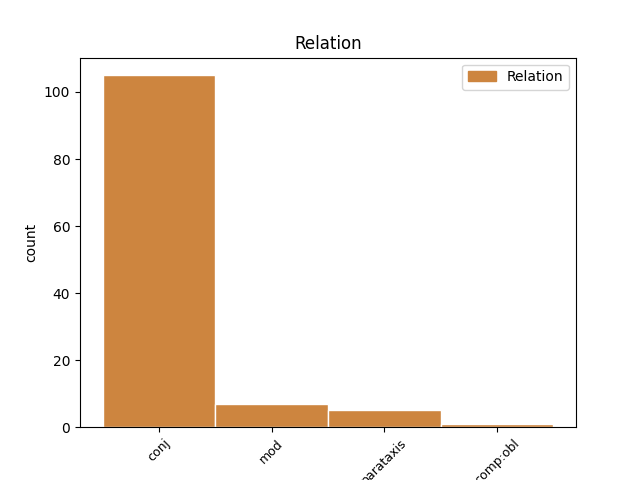
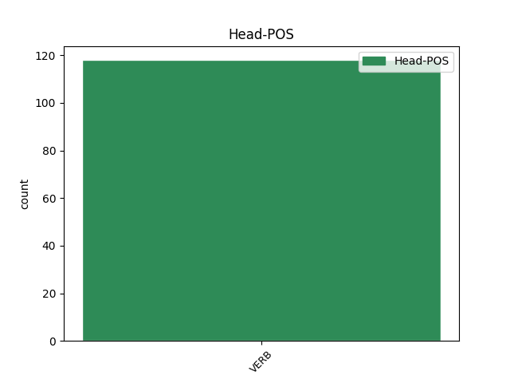
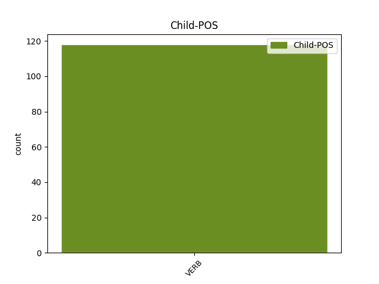

Distribution of features within this leaf



Agreement Rules sorted by frequency.
- When the dependent token is the conjunct(conj) of the head token, and the head token is VERB and the dependent token is VERB.
1 Yn _ _ _ _ 0 _ _ _
2 wreiddiol _ _ _ _ 0 _ _ _
3 , _ _ _ _ 0 _ _ _
4 cafodd _ VERB _ Form=Len|Mood=Ind|Tense=Past 0 _ _ _
5 ei _ _ _ _ 0 _ _ _
6 gynllunio _ _ _ _ 0 _ _ _
7 ar _ _ _ _ 0 _ _ _
8 gyfer _ _ _ _ 0 _ _ _
9 dinasyddion _ _ _ _ 0 _ _ _
10 dosbarth _ _ _ _ 0 _ _ _
11 canol _ _ _ _ 0 _ _ _
12 y _ _ _ _ 0 _ _ _
13 ddinas _ _ _ _ 0 _ _ _
14 ac _ _ _ _ 0 _ _ _
15 roedd _ VERB _ Form=Len|Mood=Ind|Tense=Past 4 conj _ _
16 mewn _ _ _ _ 0 _ _ _
17 ardal _ _ _ _ 0 _ _ _
18 eitha _ _ _ _ 0 _ _ _
19 cyfoethog _ _ _ _ 0 _ _ _
20 o _ _ _ _ 0 _ _ _
21 Farcelona _ _ _ _ 0 _ _ _
22 . _ _ _ _ 0 _ _ _
1 Roedd _ VERB _ Form=Len|Mood=Ind|Tense=Past 0 _ _ _
2 ar _ _ _ _ 0 _ _ _
3 fin _ _ _ _ 0 _ _ _
4 ennill _ _ _ _ 0 _ _ _
5 ei _ _ _ _ 0 _ _ _
6 gap _ _ _ _ 0 _ _ _
7 cyntaf _ _ _ _ 0 _ _ _
8 pan _ _ _ _ 0 _ _ _
9 aeth aeth VERB _ Form=Len|Mood=Ind|Tense=Past 1 mod _ _
10 yn _ _ _ _ 0 _ _ _
11 sâl _ _ _ _ 0 _ _ _
12 gyda _ _ _ _ 0 _ _ _
13 tuberculosis _ _ _ _ 0 _ _ _
14 a _ _ _ _ 0 _ _ _
15 fu _ _ _ _ 0 _ _ _
16 bron _ _ _ _ 0 _ _ _
17 a'i _ _ _ _ 0 _ _ _
18 ladd _ _ _ _ 0 _ _ _
19 a _ _ _ _ 0 _ _ _
20 gorfodwyd _ _ _ _ 0 _ _ _
21 ef _ _ _ _ 0 _ _ _
22 i _ _ _ _ 0 _ _ _
23 rhoi'r _ _ _ _ 0 _ _ _
24 gorau _ _ _ _ 0 _ _ _
25 i _ _ _ _ 0 _ _ _
26 chwarae _ _ _ _ 0 _ _ _
27 . _ _ _ _ 0 _ _ _
1 Ym _ _ _ _ 0 _ _ _
2 1861 _ _ _ _ 0 _ _ _
3 cafodd _ VERB _ Form=Len|Mood=Ind|Tense=Past 0 _ _ _
4 yr _ _ _ _ 0 _ _ _
5 Is _ _ _ _ 0 _ _ _
6 iarll _ _ _ _ 0 _ _ _
7 Emlyn _ _ _ _ 0 _ _ _
8 ei _ _ _ _ 0 _ _ _
9 ddyrchafu _ _ _ _ 0 _ _ _
10 i _ _ _ _ 0 _ _ _
11 Dŷ'r _ _ _ _ 0 _ _ _
12 Arglwyddi _ _ _ _ 0 _ _ _
13 fel _ _ _ _ 0 _ _ _
14 yr _ _ _ _ 0 _ _ _
15 Ail _ _ _ _ 0 _ _ _
16 Iarll _ _ _ _ 0 _ _ _
17 Cawdor _ _ _ _ 0 _ _ _
18 a _ _ _ _ 0 _ _ _
19 chafwyd _ _ _ _ 0 _ _ _
20 is _ _ _ _ 0 _ _ _
21 etholiad _ _ _ _ 0 _ _ _
22 cystadleuol _ _ _ _ 0 _ _ _
23 i _ _ _ _ 0 _ _ _
24 ganfod _ _ _ _ 0 _ _ _
25 olynydd _ _ _ _ 0 _ _ _
26 iddo _ _ _ _ 0 _ _ _
27 : _ _ _ _ 0 _ _ _
28 Yn _ _ _ _ 0 _ _ _
29 etholiad _ _ _ _ 0 _ _ _
30 1865 _ _ _ _ 0 _ _ _
31 cafodd _ VERB _ Form=Len|Mood=Ind|Tense=Past 3 parataxis _ _
32 George _ _ _ _ 0 _ _ _
33 Lort _ _ _ _ 0 _ _ _
34 Phillips _ _ _ _ 0 _ _ _
35 ei _ _ _ _ 0 _ _ _
36 ddychwelyd _ _ _ _ 0 _ _ _
37 yn _ _ _ _ 0 _ _ _
38 ddiwrthwynebiad _ _ _ _ 0 _ _ _
39 . _ _ _ _ 0 _ _ _
1 Rhwng _ VERB _ Form=Len|Mood=Ind|Tense=Past 0 _ _ _
2 torriad _ _ _ _ 0 _ _ _
3 gwawr _ _ _ _ 0 _ _ _
4 a _ _ _ _ 0 _ _ _
5 chanol _ _ _ _ 0 _ _ _
6 dydd _ _ _ _ 0 _ _ _
7 roedd roeí VERB _ Form=Len|Mood=Ind|Tense=Past 1 comp:obl _ _
8 bwau _ _ _ _ 0 _ _ _
9 hirion _ _ _ _ 0 _ _ _
10 a _ _ _ _ 0 _ _ _
11 phicelli'r _ _ _ _ 0 _ _ _
12 Cymry _ _ _ _ 0 _ _ _
13 wrthi'n _ _ _ _ 0 _ _ _
14 ddiddiwedd _ _ _ _ 0 _ _ _
15 . _ _ _ _ 0 _ _ _
Disagree Examples:
1 Aethpwyd _ VERB _ Mood=Ind|Tense=Past 0 _ _ _
2 a'r _ _ _ _ 0 _ _ _
3 rhan _ _ _ _ 0 _ _ _
4 fwyaf _ _ _ _ 0 _ _ _
5 o _ _ _ _ 0 _ _ _
6 Iddewon _ _ _ _ 0 _ _ _
7 Chernivtsi _ _ _ _ 0 _ _ _
8 i _ _ _ _ 0 _ _ _
9 wersyll _ _ _ _ 0 _ _ _
10 yn _ _ _ _ 0 _ _ _
11 y _ _ _ _ 0 _ _ _
12 Wcrain _ _ _ _ 0 _ _ _
13 lle _ _ _ _ 0 _ _ _
14 bu _ _ _ _ 0 _ _ _
15 farw _ _ _ _ 0 _ _ _
16 ei _ _ _ _ 0 _ _ _
17 rieni _ _ _ _ 0 _ _ _
18 yn _ _ _ _ 0 _ _ _
19 1942 _ _ _ _ 0 _ _ _
20 , _ _ _ _ 0 _ _ _
21 ond _ _ _ _ 0 _ _ _
22 cadwyd _ VERB _ Mood=Ind|Tense=Fut 1 conj _ _
23 Celan _ _ _ _ 0 _ _ _
24 i _ _ _ _ 0 _ _ _
25 weithio _ _ _ _ 0 _ _ _
26 i'r _ _ _ _ 0 _ _ _
27 Almaenwyr _ _ _ _ 0 _ _ _
28 tan _ _ _ _ 0 _ _ _
29 ei _ _ _ _ 0 _ _ _
30 ryddhau _ _ _ _ 0 _ _ _
31 yn _ _ _ _ 0 _ _ _
32 Chwefror _ _ _ _ 0 _ _ _
33 1944 _ _ _ _ 0 _ _ _
34 gan _ _ _ _ 0 _ _ _
35 y _ _ _ _ 0 _ _ _
36 Rwsiaid _ _ _ _ 0 _ _ _
37 . _ _ _ _ 0 _ _ _
1 Aeth _ VERB _ Form=Len|Mood=Ind|Tense=Past 0 _ _ _
2 rhai _ _ _ _ 0 _ _ _
3 o'r _ _ _ _ 0 _ _ _
4 wageni _ _ _ _ 0 _ _ _
5 i _ _ _ _ 0 _ _ _
6 Reilffordd _ _ _ _ 0 _ _ _
7 Dyffryn _ _ _ _ 0 _ _ _
8 Rheidol _ _ _ _ 0 _ _ _
9 ac _ _ _ _ 0 _ _ _
10 maent _ VERB _ Mood=Ind|Tense=Pres 1 conj _ _
11 wedi _ _ _ _ 0 _ _ _
12 goroesi _ _ _ _ 0 _ _ _
13 hyd _ _ _ _ 0 _ _ _
14 at _ _ _ _ 0 _ _ _
15 heddiw _ _ _ _ 0 _ _ _
16 . _ _ _ _ 0 _ _ _
1 Ar _ _ _ _ 0 _ _ _
2 ôl _ _ _ _ 0 _ _ _
3 ymddatodiad _ _ _ _ 0 _ _ _
4 yr _ _ _ _ 0 _ _ _
5 Undeb _ _ _ _ 0 _ _ _
6 Sofietaidd _ _ _ _ 0 _ _ _
7 , _ _ _ _ 0 _ _ _
8 daeth _ VERB _ Mood=Ind|Tense=Past 0 _ _ _
9 Ffederasiwn _ _ _ _ 0 _ _ _
10 Rwsia _ _ _ _ 0 _ _ _
11 newydd _ _ _ _ 0 _ _ _
12 annibynnol _ _ _ _ 0 _ _ _
13 yn _ _ _ _ 0 _ _ _
14 bŵer _ _ _ _ 0 _ _ _
15 mawr _ _ _ _ 0 _ _ _
16 , _ _ _ _ 0 _ _ _
17 ac _ _ _ _ 0 _ _ _
18 ystyrir _ VERB _ Mood=Ind|Tense=Pres 8 conj _ _
19 hefyd _ _ _ _ 0 _ _ _
20 bod _ _ _ _ 0 _ _ _
21 y _ _ _ _ 0 _ _ _
22 wlad _ _ _ _ 0 _ _ _
23 yn _ _ _ _ 0 _ _ _
24 archbŵer _ _ _ _ 0 _ _ _
25 ynni _ _ _ _ 0 _ _ _
26 . _ _ _ _ 0 _ _ _
1 Pan _ _ _ _ 0 _ _ _
2 ad _ _ _ _ 0 _ _ _
3 - _ _ _ _ 0 _ _ _
4 unwyd _ _ _ _ 0 _ _ _
5 Bafaria _ _ _ _ 0 _ _ _
6 yn _ _ _ _ 0 _ _ _
7 1506 _ _ _ _ 0 _ _ _
8 daeth _ VERB _ Mood=Ind|Tense=Past 0 _ _ _
9 München _ _ _ _ 0 _ _ _
10 yn _ _ _ _ 0 _ _ _
11 brifddinas _ _ _ _ 0 _ _ _
12 , _ _ _ _ 0 _ _ _
13 ac _ _ _ _ 0 _ _ _
14 yn _ _ _ _ 0 _ _ _
15 1806 _ _ _ _ 0 _ _ _
16 daeth _ VERB _ Mood=Ind|Tense=Fut 8 conj _ _
17 yn _ _ _ _ 0 _ _ _
18 brifddinas _ _ _ _ 0 _ _ _
19 Teyrnas _ _ _ _ 0 _ _ _
20 Bafaria _ _ _ _ 0 _ _ _
21 . _ _ _ _ 0 _ _ _
1 Syrthiodd _ VERB _ Mood=Ind|Tense=Past 0 _ _ _
2 yr _ _ _ _ 0 _ _ _
3 Almohadiaid _ _ _ _ 0 _ _ _
4 yn _ _ _ _ 0 _ _ _
5 ôl _ _ _ _ 0 _ _ _
6 ar _ _ _ _ 0 _ _ _
7 eu _ _ _ _ 0 _ _ _
8 cadarnleoedd _ _ _ _ 0 _ _ _
9 ym _ _ _ _ 0 _ _ _
10 Moroco _ _ _ _ 0 _ _ _
11 ac _ _ _ _ 0 _ _ _
12 ymrannodd _ VERB _ Mood=Ind|Tense=Pres 1 conj _ _
13 y _ _ _ _ 0 _ _ _
14 frenhinllin _ _ _ _ 0 _ _ _
15 yn _ _ _ _ 0 _ _ _
16 ddau _ _ _ _ 0 _ _ _
17 . _ _ _ _ 0 _ _ _